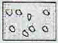
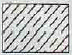
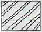
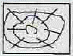
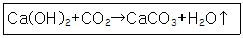
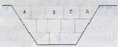
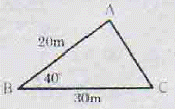
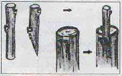

조경기능사 (2014-10-11 기출문제)
1과목: 조경일반
1. 다음 중 직선과 관련된 설명으로 옳은 것은?
- 절도가 없어 보인다.
- 표현 의도가 분산되어 보인다.
- 베르사이유 궁전은 직선이 지나치게 강해서 압박감이 발생한다.
- 직선 가운데에 중개물(仲介物)이 있으면 없는 때보다도 짧게 보인다.
(정답률: 70%)

2. 다음 중 경주 월지(안압지 : 雁鴨地)에 있는 섬의 모양으로 가장 적당한 것은?
- 육각형
- 사각형
- 한반도형
- 거북이형
(정답률: 82%)
3. 영국의 풍경식 정원은 자연과의 비율이 어떤 비율로 조성 되었는가?
- 1 : 1
- 1 : 5
- 2 : 1
- 1 : 100
(정답률: 84%)
4. 낮에 태양광 아래에서 본 물체의 색이 밤에 실내 형광등 아래에서 보니 달라 보였다. 이러한 현상을 무엇이라 하는가?
- 메타메리즘
- 메타블리즘
- 프리즘
- 착시
(정답률: 63%)
5. 다음 중 색의 잔상(殘像, afterimage)과 관련한 설명으로 틀린 것은?
- 잔상은 원래 자극의 세기, 관찰시간과 크게 비례한다.
- 주위색의 영향을 받아 주위색에 근접하게 변화하는 것이다.
- 주어진 자극이 제거된 후에도 원래의 자극과 색, 밝기가 같은 상이 보인다.
- 주어진 자극이 제거된 후에도 원래의 자극과 색, 밝기가 반대인 상이 보인다.
(정답률: 42%)
6. 다음 중국식 정원의 설명으로 가장 거리가 먼 것은?
- 차경수법을 도입하였다.
- 사실주의 보다는 상징적 축조가 주를 이루는 사의주의에 입각하였다.
- 다정(茶庭)이 정원구성 요소에서 중요하게 작용하였다.
- 대비에 중점을 두고 있으며, 이것이 중국정원의 특색을 이루고 있다.
(정답률: 81%)
7. 구조용 재료의 단면 도시기호 중 강(鋼)을 나타낸 것으로 가장 적합한 것은?




(정답률: 76%)
8. 다음 중‘사자의 중정(Court of Lion)은 어느 곳에 속해 있는가?
- 헤네랄리페
- 알카자르
- 알함브라
- 타즈마할
(정답률: 79%)
9. 실제 길이가 3m는 축적 1/30 도면에서 얼마로 나타내는가?
- 1 cm
- 10 cm
- 3 cm
- 30 cm
(정답률: 70%)
10. 고려시대 궁궐의 정원을 맡아 관리하던 해당 부서는?
- 내원서
- 정원서
- 상림원
- 동산바치
(정답률: 87%)
11. 컴퓨터를 사용하여 조경제도 작업을 할 때의 작업 특징과 가장 거리가 먼 것은?
- 도덕성
- 응용성
- 정확성
- 신속성
(정답률: 95%)
12. 도시공원의 설치 및 규모의 기준상 어린이공원의 최대 유치 거리는?
- 100m
- 250m
- 500m
- 1000m
(정답률: 85%)
13. 채도대비의 의해 주황색 글씨를 보다 선명하게 보이도록 하려면 바탕색으로 어떤 색이 가장 적합한가?
- 빨간색
- 노란색
- 파란색
- 회색
(정답률: 71%)
14. 다음 중 단순미(單純美)와 가장 관련이 없는 것은?
- 잔디밭
- 독립수
- 형상수(topiary)
- 자연석 무너짐 쌓기
(정답률: 71%)
15. 다음 관용색명 중 색상의 속성이 다른 것은?
- 이끼색
- 라벤더색
- 솔잎색
- 풀색
(정답률: 90%)
2과목: 조경재료
16. 건설재료용으로 사용되는 목재를 건조시키는 목적 및 건조방법에 관한 설명 중 틀린 것은?
- 중양경감 및 강도, 내구성을 증진시킨다.
- 균류에 의한 부식 및 빌러의 피해를 예방한다.
- 자연건조법에 해당하는 공기건조법은 실외에 목재를 쌓아두고 기건상태가 될 때까지 건조시키는 방법이다.
- 밀폐된 실내에서 가열한 공기를 보내서 건조를 촉진시키는 방법은 인공건조법 중에서 증기건조법이다.
(정답률: 66%)
17. 다음 중 멜루스(Malus)속에 해당되는 식물은?
- 아그배나무
- 복사나무
- 팥배나무
- 쉬땅나무
(정답률: 67%)
18. 다음 중 중 양수에 해당하는 낙엽관목 수종은?
- 독일가문비
- 무궁화
- 녹나무
- 주목
(정답률: 69%)
19. 다음 중 목재의 방화제(防火劑)로 사용될 수 없는 것은?
- 염화암모늄
- 황산암모늄
- 제2인산암모늄
- 질산암모늄
(정답률: 53%)
20. 소가 누워있는 것과 같은 들로, 횡석보다 안정감을 주는 자연석의 형태는?
- 와석
- 평석
- 입석
- 환석
(정답률: 87%)
21. 다음 인동과(科) 수종에 대한 설명으로 맞는 것은?
- 백당나무는 열매가 적색이다.
- 아왜나무는 상록활엽관목이다.
- 분꽃나무는 꽃향기가 없다.
- 인동덩굴의 열매는 둥글고 6 ~ 8월에 붉게 성숙한다.
(정답률: 41%)
22. 조경에 이용될 수 있는 상록활엽관목류의 수목으로만 짝지어진 것은?
- 아왜나무, 가시나무
- 광나무, 꽝꽝나무
- 백당나무, 병꽃나무
- 황매화, 후피향나무
(정답률: 72%)
23. 콘크리트의 표준배합 비가 1:3:6 일 때 이 배합비의 순서에 맞는 각가의 재료를 바르게 나열한 것은?
- 모래 : 자갈 : 시멘트
- 자갈 : 시멘트 : 모래
- 자갈 : 모래 : 시멘트
- 시멘트 : 모래 : 자갈
(정답률: 82%)
24. 다음 중 가시가 없는 수종은?
- 산초나무
- 음나무
- 금목서
- 찔레꽃
(정답률: 84%)
25. 종류로는 수용형, 용제형, 분말형 등이 있으며 목재, 금속, 플라스틱 및 이들 이종재(異種材)간의 접착에 사용되는 합성수지 접착제는?
- 페놀수지접착제
- 카세인접착제
- 요소수지접착제
- 폴리에스테르수지접착제
(정답률: 69%)
26. 다음 중 콘크리트 내구성에 영향을 주는 아래 화학반응식의 현상은?

- 콘크리트 염해
- 동결융해현상
- 콘크리트 중성화
- 알칼리 골재반응
(정답률: 71%)
27. 구상나무(Abies Koreana Wilson)와 관련된 설명으로 틀리 것은?
- 한국이 원산지이다.
- 측백나무과(科)에 해당한다.
- 원추형의 상록침엽교목이다.
- 열매는 구과로 원통형이며 길이 4~7cm, 지름 2~3cm의 자갈색이다.
(정답률: 54%)
28. 마로니에와 칠엽수에 대한 설명으로 옳지 않은 것은
- 마로니에와 칠엽수는 원산지가 같다.
- 마로니에와 칠엽수의 잎은 장상복엽이다.
- 마로니에는 칠엽수와는 달리 열매 표면에 가시가 있다.
- 마로니에와 칠엽수모두 열매 속에는 밤톨같은 씨가 들어 있다.
(정답률: 61%)
29. 자연토양을 사용한 인공지반에 식재된 대관목의 생육에 필요한 최소 식재토심은?(단. 배수구배는 1.5 ~ 2.0% 이다.)(오류 신고가 접수된 문제입니다. 반드시 정답과 해설을 확인하시기 바랍니다.)
- 15cm
- 30cm
- 45cm
- 70cm
(정답률: 63%)
30. 다음 중 조경공간의 포장용으로 주로 쓰이는 가공석은?
- 견치돌(간지석)
- 각석
- 판석
- 강석(하천석)
(정답률: 80%)
31. 주로 감람석, 섬록암 등의 심성암이 변질된 것으로 암녹색 바탕에 흑백색의 아름다운 무늬가 있으며, 경질이나 풍화성이 있어 외장재보다는 내장 마감용 석재로 이용되는 것은?
- 사문암
- 안산암
- 점판암
- 화강암
(정답률: 51%)
32. 다음 중 시멘트의 응결시간에 가장 영향이 적은 것은?
- 수량(水量)
- 온도
- 분말도
- 골재의 입도
(정답률: 67%)
33. 콘크리트 다지기에 대한 설명으로 틀린 것은?(오류 신고가 접수된 문제입니다. 반드시 정답과 해설을 확인하시기 바랍니다.)
- 진동다지기를 할 때에는 내부 진동기를 하층의 콘크리트 속으로 작업이 용이하도록 사선으로 0.5m 정도 찔러 넣은다.
- 내부진동기의 1개소당 진동시간은 다짐할 때 시멘트 페이스트가 표면 상부로 약간 부상하기까지 한다.
- 거푸집파에 접하는 콘크리트는 되도록 평탄한 표면이 얻어지도록 타설하고 다져야 한다.
- 콘크리트 다지기에는 내부진동기의 사용을 원칙으로 하나, 얇은 벽 등 내부진동기의 사용이 곤란한 장소에서는 거푸집 진동기를 사용해도 좋다.
(정답률: 59%)
34. 다음 중 목재에 유성페인트 칠을 할 때 가장 관련이 없는 재료는?
- 건성유
- 건조제
- 방청제
- 희석제
(정답률: 75%)
35. 다음 조경식물 중 생장 속도가 가장 느린 것은?
- 배롱나무
- 쉬나무
- 눈주목
- 층층나무
(정답률: 72%)
3과목: 조경 시공 및 관리
36. 가지가 굵어 이미 찢어진 경우에도 도목 등의 위험을 방지 하고자 하는 방법으로 가장 알맞은 것은?
- 지주설치
- 쇠조임(당김줄설치)
- 외과수술
- 가지치기
(정답률: 69%)
37. 다음 중 흙깍기의 순서 중 가장 먼저 실시하는 곳은?

- A
- B
- C
- D
(정답률: 86%)
38. 수목의 뿌리분 굴취와 관련된 설명으로 틀린 것은?
- 분의 크기는 뿌리목 줄기 지름의 3 ~ 4배를 기준으로 한다.
- 수목 주위를 파 내려가는 방향은 지면과 직각이 되도록 한다.
- 분의 주위를 1/2정도 파 내려갔을 무렵부터 뿌리감기를 시작한다.
- 분 감기 직근을 잘라야 용이하게 작업할 수 있다.
(정답률: 67%)
39. 우리나라에서 1929년 서울의 비원(秘苑)과 전남 목포지방에서 처음 발견된 해충으로 솔잎 기부에 충영을 형성하고 그 안에서 흡즙해 소나무에 피해를 주는 해충은?
- 솔껍질깍지벌레
- 솔잎혹파리
- 솔나방
- 솔잎벌
(정답률: 78%)
40. 다음 중 비료의 3요소에 해당하지 않는 것은?
- N
- K
- P
- Mg
(정답률: 88%)
41. 합성수지 놀이시설물의 관리 요령으로 가장 적합한 것은?
- 자체가 무거워 균열 발생 전에 보수한다.
- 정기적인 보수와 도료 등을 칠해 주어야 한다.
- 회전하는 축에는 정기적으로 그리스를 주입한다.
- 겨울철 저온기 때 충격에 의한 파손을 주의한다.
(정답률: 68%)
42. 다음 중 지피식물 선택 조건으로 부적합한 것은?
- 치밀하게 피복되는 것이 좋다.
- 키가 낮고 다년생이며 부드러워야 한다.
- 병충해에 강하며 관리가 용이하여야 한다.
- 특수 환경에 잘 적응하며 희소성이 있어야 한다.
(정답률: 89%)
43. 다음 그림과 같은 삼각형의 면적은?

- 115 m2
- 193 m2
- 230 m2
- 386 m2
(정답률: 52%)
44. 디딤돌 놓기 공사에 대한 설명으로 틀린 것은?
- 정원의 잔디, 나지 위에 놓아 보행자의 편의를 돕는다.
- 넓적하고 평평한 자연석, 판석, 통나무 등이 활용된다.
- 시작과 끝 부분, 갈라지는 부분은 50cm 정도의 돌을 사용한다.
- 같은 크기의 돌을 직선으로 배치하여 기능성을 강조한다.
(정답률: 81%)
45. 다음 중 토양 통기성에 대한 설명으로 틀린 것은?
- 기체는 농도가 낮은 곳에서 높은 곳으로 확산작용에 의해 이동한다.
- 토양 속에는 대기와 마찬가지로 질소, 산소 이산화탄소 등의 기체가 존재한다.
- 토양생물의 호흡과 분해로 인해 토양 공기 중에는 대기에 비하여 산소가 적고 이산화탄소가 많다.
- 건조한 토양에서는 이산화탄소와 산소의 이동이나 교환이 쉽다.
(정답률: 60%)
46. 다음 중 조경시공에 활용되는 석재의 특징으로 부적합한 것은?
- 내화성이 뛰어나고 압축강도가 크다.
- 내수성ㆍ내구성ㆍ내화학성이 풍부하다.
- 색조와 광택이 있어 외관이 미려ㆍ장중하다.
- 천연물이기 때문에 재료가 균일하고 갈라지는 방향성이 없다.
(정답률: 82%)
47. 목재를 방부제속에 일정기간 담가두는 방법으로 크레오소트(creosote)를 많이 사용하는 방부법은?
- 표면탄화법
- 직접유살법
- 상압주입법
- 약제도포법
(정답률: 66%)
48. 과다 사용시 병에 대한 저항력을 감소시키므로 특히 토양의 비배관리에 주의해야 하는 무기성분은?
- 질소
- 규산
- 칼륨
- 인산
(정답률: 74%)
49. 토양수분 중 식물이 생육에 주로 이용하는 유효수분은?
- 결합수
- 흡습수
- 모세관수
- 중력수
(정답률: 80%)
50. 다음 그림은 수목의 번식방법 중 어떠한 접목법에 해당 하는가?

- 깍기접
- 안장접
- 쪼개접
- 박피접
(정답률: 75%)
51. 인공 식재 기반 조성에 대한 설명으로 틀린 것은?(오류 신고가 접수된 문제입니다. 반드시 정답과 해설을 확인하시기 바랍니다.)
- 토양, 방수 및 배수시설 등에 유의한다.
- 식재층과 배수층 사이는 부직포를 깐다.
- 심근성 교목의 생존 최소 깊이는 40cm로 한다.
- 건축물 위의 인공식재 기반은 방수처리 한다.
(정답률: 78%)
52. 개화 결실을 목적으로 실시하는 정지-전정의 방법으로 틀린 것은?(문제 오류로 실제 시험에서는 1, 2번이 정답 처리된듯 합니다. 여기서는 2번을 누르면 정답 처리 됩니다.)
- 약지는 길게, 강지는 짧게 전정하여야 한다.
- 묵은 가지나 병충해 가지는 수액유동후에 전정한다.
- 작은 가지나 내측으로 뻣은 가지는 제거한다.
- 개화결실을 촉진하기 위하여 가지를 유인하거나 단근 작접을 실시한다.
(정답률: 60%)
53. 도시공원의 식물 관리비 계산시 산출근거와 관련이 없는 것은?
- 식물의 수량
- 식물의 품종
- 작업률
- 작업회수
(정답률: 64%)
54. 안전관리 사고의 유형은 설치, 관리, 이용자ㆍ보호자ㆍ주최자 등의 부주의, 자연재해 등에 의한 사고로 분류된다. 다음 중 관리하자에 의한 사고의 종류에 해당하지 않는 것은?
- 위험물 방치에 의한 것
- 시설의 노후 및 파손에 의한 것
- 시설의 구조 자체의 결함에 의한 것
- 위험장소에 대한 안전대책 미비에 의한 것
(정답률: 79%)
55. 다음 중 방제 대상별 농약 포장지 색깔이 옳은 것은?
- 살충제 - 노란색
- 살균제 - 초록색
- 제초제 - 분홍색
- 생장 조절제 - 청색
(정답률: 68%)
56. 다음 중 콘크리트의 파손 유형이 아닌 것은?
- 균열(crack)
- 융기(blow-up)
- 단차(faulting)
- 양생(curing)
(정답률: 84%)
57. 수간과 줄기 표면의 상처에 침투성 약액을 발라 조직내로 약효성분이 흡수되게 하는 농약 사용법은?
- 도포법
- 관주법
- 도말법
- 분무법
(정답률: 79%)
58. 참나무 시들음병에 관한 설명으로 틀린 것은?
- 피해목은 벌채 및 훈증처리 한다.
- 솔수염하늘소가 매개충이다.
- 곰팡이가 도관을 막아 수분과 양분을 차단한다.
- 우리나라에서는 2004년 경기도 성남시에서 처음 발견 되었다.
(정답률: 58%)
59. 적심(摘心, candle pinching)에 대한 설명으로 틀린 것은?
- 고정생장하는 수목에 실시한다.
- 참나무과(科) 수종에서 주로 실시한다.
- 수관이 치밀하게 되도록 교정하는 작업이다.
- 촛대처럼 자란 새순을 가위로 잘라주거나 손끝으로 끊어준다.
(정답률: 54%)
60. 이종기생균이 그 생활사를 완성하기 위하여 기주를 바꾸는 것을 무엇이라고 하는가?
- 기주교대
- 중간기주
- 이종기생
- 공생교환
(정답률: 80%)